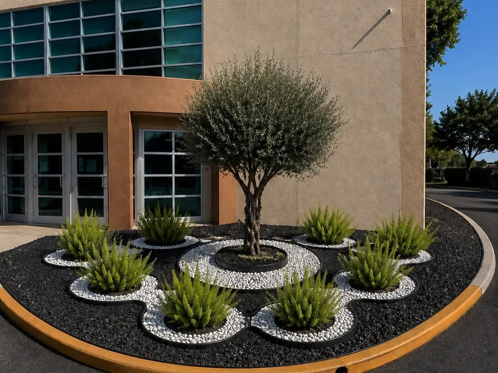

If you've ever gotten quotes from multiple paver contractors and wondered why prices vary so much, one of the biggest differentiators is jointing material. Specifically, whether or not they use polymeric sand — and whether they apply it correctly. Here's why it matters more than most homeowners realize.
What Is Polymeric Sand?
Polymeric sand is a blend of fine sand particles mixed with a polymer binder (typically polyurethane or silica-based). When swept into paver joints and activated with water, the binder hardens and binds the sand particles together, creating a firm but slightly flexible joint that resists erosion, weed growth, and ant invasion.
Regular play sand or construction sand — the cheaper alternative — washes out with every rain, allowing weeds to germinate and ants to excavate the joint material, eventually causing paver movement and settlement.
The Florida Problem with Regular Sand
South Florida's rainy season is particularly brutal on regular sand joints. Intense downpours can wash out months of sand accumulation in a single storm. We've seen patios installed by other contractors where the joints are completely empty just six months after installation. Once the sand is gone, the pavers become unstable and weed roots exploit the open channels aggressively.

Choosing the Right Polymeric Sand
Not all polymeric sand is equal. For West Palm Beach projects, we use polymeric sand rated for:
Joint width compatibility: Different formulas work for 1/16"–3/8" joints vs. wider joints (up to 4" for natural stone). Using the wrong formula for your joint width will crack or crumble.
UV stability: Cheap polymeric sand yellows and cracks in Florida's sun. Premium products maintain color and flexibility for 5–10 years.
Freeze-thaw rating: Less critical in South Florida, but products rated for freeze-thaw cycles generally use higher-quality polymers that also perform better in heat.
Brands We Trust: Alliance Gator, Techniseal, and SEK-Surebond are the polymeric sand brands we use on every Pavers Ordonez installation. We don't use store-brand or unmarked products regardless of price.
Application: Where Most Mistakes Happen
Even good polymeric sand fails if applied incorrectly. Common mistakes: applying when rain is forecast (washes the polymer out before it sets), using too much water during activation (dilutes the binder), not blowing excess sand off the surface (leaves a haze), and applying over damp pavers (prevents proper adhesion). Our crew follows a strict application protocol on every project.
What Happens If You Skip It
Budget contractors sometimes use regular sand to cut costs. You may not notice the difference immediately, but within 6–12 months you'll have weeds, ants, and unstable pavers. The cost to remove all joint sand, treat for weeds, and reinstall with polymeric sand is often more than the original savings. Do it right the first time.
Questions about your existing paver joints? Call (561) 970-1917 for a free assessment.